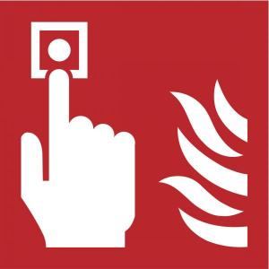

|  |
IA04 - JWayOuyYi CHEN - Alain MARTINStéphane DONIN - Maxime DAVID |
JWayOut est un projet consistant en la simulation d’un exercice d’évacuation d’un lieu suite à un incendie. Un nombre donné d’individus est alors placé au sein de l’environnement de simulation et le superviseur humain de la simulation désigne un endroit où doit apparaître l’incendie responsable du déclenchement de la simulation à l’aide de la souris. Suite à cela, la simulation peut alors débuter, simulation où tous les individus participant se dirigeront vers la sortie, laquelle sera guidée au premier lieu par des indicateurs sur les murs de l’environnement, comme dans de réelles situations. Les influences entre les individus seront aussi prises en compte lors de la simulation.